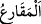
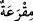

çobanların çaldıkları kaval gibi bir çalgı âleti îcâd etti. Bu âletten o zamana kadar
insanların duymadığı garip sesler çıkartmaya başladı. Ova sakinleri bunu duyup geldiler
ve İblis’in etrafında toplandılar. Artık yılda bir onun başında toplanıp bayram etmeye
başladılar. Kadınlar yabancı erkeklerin yanında açılıp saçıldılar. Erkekler de kadınlara
karşı süslenip çalımlandılar. Onların böyle bir bayram gününde dağ sakinlerinden bir
adam izinsiz onların arasına daldı. Kadınları ve onların güzelliğini gördü.
Arkadaşlarına durumu haber verdi. Onlar da gelip bu bayrama katıldılar. Bu şekilde
zinâ, fuhuş ve ahlâksızlık ortaya çıkıp yayıldı. İşte Allah Teâlâ’nın “...eski câhiliyye
âdetinde olduğu gibi açılıp saçılmayın.” sözünün mânâsı budur. Bu durum İdris
(a.s.)’ın zamanından sonra meydana gelmiştir.
Kâşifî şöyle demiştir: “En doğrusu şudur: “Eski/ilk câhiliyyet”, Hz. İbrahim (a.s.)
zamanında idi. Kadınlar elbiselerine inci bağlayıp bu elbiseleri giyerler ve kendilerini
yol ortasında erkeklere gösterirlerdi.”
Son câhiliyyetin âhir zamanda onların yaptıklarının benzerini yapan bir topluluk
olduğu söylenmiştir.
Bir hadîste şöyle buyrulmuştur: “Ateş ehlinden iki sınıf insan vardır ki ben onları
görmedim.” Yâni asr-ı saadetin temizliği sebebiyle Rasûlullah (s.a.)’in asrında onlar
yoktu. Bilakis ondan sonra ortaya çıktılar. “Bunlardan biri ellerinde sığır kuyrukları
gibi kamçılarla insanlara vuran bir topluluktur.” Bu kamçılara Arap ülkelerinde “__WORD__ denir. “__WORD__nın çoğuludur. Bu, bir ucu takviye edilip bağlanmış, orta parmak
kalınlığında bir kamçıdır. Onunla hırsızlara çıplak olarak vururlar. Hadîste
bahsedilenlerin köpekler gibi zâlimlerin kapılarında dolaşıp insanları vurarak ve
söverek uzaklaştıran kimseler olduğu söylenmiştir. “İkinci sınıf ise” aslında “giyinmiş”
ancak mânâda “çıplak kadınlardır.” Çünkü bu kadınlar, altında olanı belli eden ince
elbiseler giyerler. Yâni, onlar takvâ elbisesinden çıplaktırlar. Onlar zamanımızın
kadınlarının yaptığı gibi dış elbiselerini arkalarına atarlar ve göğüsleri açılır.
Yahut da; Allâh’ın nîmetlerini giymiş/kuşanmış, şükürden çıplak/mahrum kadınlardır,
demektir. Yâni sâlih amel olmazsa dünyâ nîmetleri âhirette fayda vermez. Bu mânâ
kadınlara mahsus değildir.
“Bu kadınlar meylettirir/oynatırlar” Yâni kendileriyle erkeklerin kalplerini fesada
meyl ettirirler. Yahut rakkaselerin yaptığı gibi omuzlarını ve arkalarını oynatırlar. Ya da
yüzlerinin görünmesi için örtü ve peçelerini kaydırırlar.
Erkeklere “meylederler” yâni, onlar kibirli ve çalımlı yürürler. “Başları eğilmiş deve
hörgücü gibidir.” Başörtüleri ve başlıkları ile başlarını büyütüp yükseltirler de
sonunda yağının çokluğundan eğilen deve hörgücüne benzer. Ya da onlar başlarını
kaldırıp yabancı erkeklere bakarlar, demektir. “Bu kadınlar cennete girmek şöyle
dursun, kokusunu dahi almazlar. Halbuki onun kokusu kırk yıllık mesafeden
duyulur.”[204]
Beden ile yapılan tâatlerin aslı olan: “Namazı kılın,” eğer malınız varsa mal ile